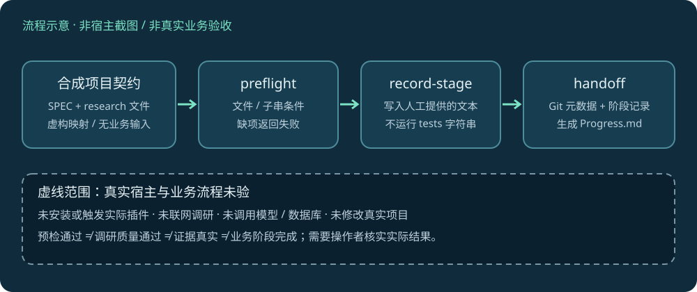

LOCAL WORKFLOW · SYNTHETIC CONTRACT
小智析析开发守门员
让阶段预检、人工证据记录和跨窗口交接有迹可循。
这是合成项目的真实离线 CLI 报告。未安装/调用实际宿主插件，未读取真实小智析析业务、私密配置或模型服务。记录中的“阶段完成”内容是明确虚构的演示输入，不能作为业务验收。下图是流程示意。
10实际 CLI 调用
3原有 pytest 另行本机通过
0真实业务 / 外部模型调用

观测到的退出码
| 合成场景 | 退出码 | 结果 |
|---|
| stage-0 preflight with synthetic contract | 0 | 符合预期 |
| missing stage-1 research is rejected | 2 | 符合预期 |
| stage-1 preflight after explicit synthetic fixture addition | 0 | 符合预期 |
| record fictional stage 0 | 0 | 符合预期 |
| record fictional stage 1 | 0 | 符合预期 |
| handoff rejects unrecorded stage 2 | 1 | 符合预期 |
| handoff for recorded stages 0 and 1 | 0 | 符合预期 |
| missing required project-root argument | 2 | 符合预期 |
| out-of-range stage | 2 | 符合预期 |
| project without SPEC is rejected | 1 | 符合预期 |
退出码 0/2/1 都包含预期分支；匹配结果不证明调研质量、测试真实性或工具已经安装。Git 元数据来自新建的隔离合成仓库，不联系远端。
实际命令与输出
stage-0 preflight with synthetic contract · exit 0
guardian.py preflight --project-root <SYNTHETIC_PROJECT> --stage 0 --task 合成契约检查
{
"ok": true,
"stage": 0,
"task": "合成契约检查",
"research": "<SYNTHETIC_PROJECT>\\research\\调研报告.md",
"missing": [],
"tool_matches": [
"| 阶段0 合成契约检查 | guardian CLI（本仓库） | 阶段 0 | 观察本地文件预检 |"
],
"next_actions": [
"Read the stage research",
"Load and announce matched Skills",
"Define a failing test or observable acceptance check"
]
}
missing stage-1 research is rejected · exit 2
guardian.py preflight --project-root <SYNTHETIC_PROJECT> --stage 1 --task 合成阶段记录
{
"ok": false,
"stage": 1,
"task": "合成阶段记录",
"research": "<SYNTHETIC_PROJECT>\\research\\stage-1-research.md",
"missing": [
"research/stage-1-research.md"
],
"tool_matches": [
"| 阶段1 合成阶段记录 | guardian CLI（本仓库） | 阶段 1 | 演示状态记录与交接 |"
],
"next_actions": [
"Read the stage research",
"Load and announce matched Skills",
"Define a failing test or observable acceptance check"
]
}
stage-1 preflight after explicit synthetic fixture addition · exit 0
guardian.py preflight --project-root <SYNTHETIC_PROJECT> --stage 1 --task 合成阶段记录
{
"ok": true,
"stage": 1,
"task": "合成阶段记录",
"research": "<SYNTHETIC_PROJECT>\\research\\stage-1-research.md",
"missing": [],
"tool_matches": [
"| 阶段1 合成阶段记录 | guardian CLI（本仓库） | 阶段 1 | 演示状态记录与交接 |"
],
"next_actions": [
"Read the stage research",
"Load and announce matched Skills",
"Define a failing test or observable acceptance check"
]
}
record fictional stage 0 · exit 0
guardian.py record-stage --project-root <SYNTHETIC_PROJECT> --stage 0 --summary 合成阶段 0 记录（非业务完成） --tests 仅演示写入；此文本不证明业务测试通过 --next 补充真实项目证据后再决定后续
Recorded stage 0 in <SYNTHETIC_PROJECT>\research\stage-status.json
record fictional stage 1 · exit 0
guardian.py record-stage --project-root <SYNTHETIC_PROJECT> --stage 1 --summary 合成阶段 1 记录（非业务完成） --tests 仅演示写入；此文本不证明业务测试通过 --next 补充真实项目证据后再决定后续
Recorded stage 1 in <SYNTHETIC_PROJECT>\research\stage-status.json
handoff rejects unrecorded stage 2 · exit 1
guardian.py handoff --project-root <SYNTHETIC_PROJECT> --completed 0,2 --next-stage 3
Missing recorded stage evidence: 2
handoff for recorded stages 0 and 1 · exit 0
guardian.py handoff --project-root <SYNTHETIC_PROJECT> --completed 0,1 --next-stage 2
Wrote <SYNTHETIC_PROJECT>\Progress.md
请在 <SYNTHETIC_PROJECT> 继续开发小智析析。先完整阅读 SPEC.md、Progress.md 和 research/skills-map.md，先完成联网调研并创建 research/stage-2-research.md，再调用 $guard-xiaozhixixi-development 对阶段 2 做 preflight，确认当前 Git 状态和测试基线后再继续。不得显示 backend/.env 的值。
missing required project-root argument · exit 2
guardian.py preflight --stage 0 --task 合成
usage: guardian.py preflight [-h] --project-root PROJECT_ROOT --stage
{0,1,2,3,4,5,6,7} --task TASK
guardian.py preflight: error: the following arguments are required: --project-root
out-of-range stage · exit 2
guardian.py preflight --project-root <SYNTHETIC_PROJECT> --stage 8 --task 合成
usage: guardian.py preflight [-h] --project-root PROJECT_ROOT --stage
{0,1,2,3,4,5,6,7} --task TASK
guardian.py preflight: error: argument --stage: invalid choice: 8 (choose from 0, 1, 2, 3, 4, 5, 6, 7)
project without SPEC is rejected · exit 1
guardian.py preflight --project-root <SYNTHETIC_WORKSPACE>\no-spec-project --stage 0 --task 合成
SPEC.md not found under <SYNTHETIC_WORKSPACE>\no-spec-project
生成的交接（合成）
# Progress.md — 小智析析跨窗口交接
更新时间：2026-10-27T03:53:24+08:00
## 已完成阶段
- 阶段 0: 合成阶段 0 记录（非业务完成）
- 验证: 仅演示写入；此文本不证明业务测试通过
- 后续: 补充真实项目证据后再决定后续
- 阶段 1: 合成阶段 1 记录（非业务完成）
- 验证: 仅演示写入；此文本不证明业务测试通过
- 后续: 补充真实项目证据后再决定后续
## 关键决策
- `SPEC.md` 是唯一产品规格；`research/skills-map.md` 是每项任务前的工具入口。
- 每阶段实现前先完成联网调研并写入对应 research 文件。
- 真实失败不得由模拟业务结果掩盖；密钥只从本地 `backend/.env` 读取。
## Git 与工作区
- 分支：`synthetic-demo`
- 最近提交：
```text
暂无提交
```
- 未提交状态：
```text
?? SPEC.md
?? research/
```
## 下一阶段
- 阶段：2
- 调研文件：尚未创建；先完成联网调研并创建 `research/stage-2-research.md`
- 开始前：运行开发守门员 preflight，加载匹配的 Skill/插件，并确认测试基线。
## 新窗口必须提供
- 仓库路径、`SPEC.md`、本文件、`research/skills-map.md`、下一阶段调研文件。
- 说明本地 `backend/.env` 已配置，但不要复制或粘贴任何密钥值。
## 新窗口提示词
```text
请在 <SYNTHETIC_PROJECT> 继续开发小智析析。先完整阅读 SPEC.md、Progress.md 和 research/skills-map.md，先完成联网调研并创建 research/stage-2-research.md，再调用 $guard-xiaozhixixi-development 对阶段 2 做 preflight，确认当前 Git 状态和测试基线后再继续。不得显示 backend/.env 的值。
```